Live Analysis · Complete
This is a real-world, end-to-end analytics engagement on three years of operational data from a pet daycare and boarding facility in Bethlehem, PA — a business I help manage. Starting from a raw 2.4GB MySQL backup exported from the Gingr pet business management platform, I built a full cloud data pipeline on AWS, cleaned and imported the data, and ran a complete CLV and customer analytics suite across 2,757 customers and $4.4M in revenue.
The entire pipeline runs on AWS. The raw Gingr backup — a 2.4GB MySQL dump with DEFINER clauses incompatible with RDS — was staged in S3, stripped and preprocessed on EC2, and loaded into a MySQL 8.4 database on RDS. The analysis layer connects directly to RDS via Python, ensuring reproducibility and a clean separation between storage, compute, and analytics.
The hardest part wasn't the analysis — it was the import. The Gingr dump used MySQL DEFINER syntax that RDS rejects, and a stalled import at the archive tables required writing a selective import script that skipped those tables entirely. The result mirrors a production data warehouse pattern: raw in S3, compute on EC2, persistent analytical store on RDS.
I built an RFM (Recency, Frequency, Monetary) model by scoring each of the 2,757 customers on three dimensions — days since last purchase, total transaction count, and total revenue — and bucketing each into quintiles. Composite RFM scores map to five business segments with distinct behavioral and revenue profiles.
| Segment | RFM Score | Customers | % of Customers | Revenue | % of Revenue | Avg CLV | Avg Recency |
|---|---|---|---|---|---|---|---|
| Champion | 13–15 | 587 | 21.3% | $2,909,497 | 65.7% | $4,957 | 48 days |
| Loyal | 10–12 | 645 | 23.4% | $972,751 | 22.0% | $1,508 | 197 days |
| Needs Attention | 7–9 | 735 | 26.7% | $443,420 | 10.0% | $603 | 354 days |
| At Risk | 4–6 | 637 | 23.1% | $103,308 | 2.3% | $162 | 594 days |
| Lost | 3 | 153 | 5.5% | $86 | ~0% | $1 | 797 days |
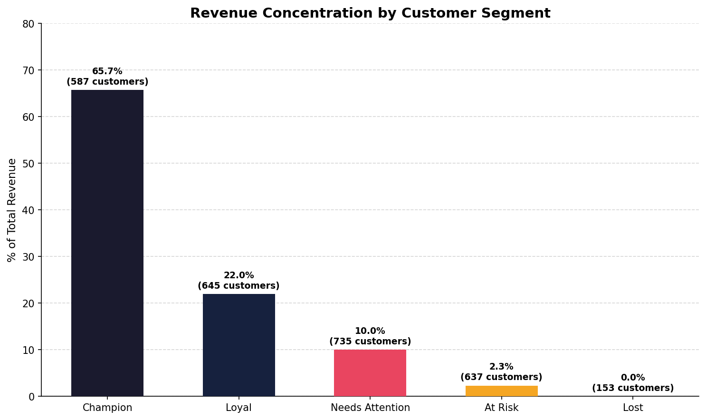
The single most important finding in this analysis: 587 Champions — just 21% of the customer base — generate 65.7% of total revenue. The remaining 2,170 customers split the other 34.3%. Losing one Champion costs roughly as much as acquiring five average customers. Protecting this segment is the highest-ROI activity the business can pursue.
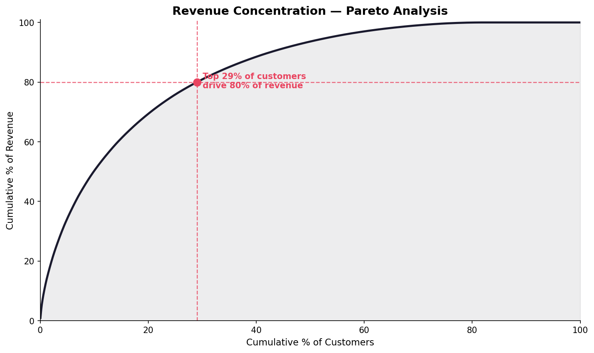
The Pareto curve confirms extreme revenue concentration. The top 29% of customers by revenue drive 80% of total revenue — well beyond the classic 80/20 rule. This is consistent with premium pet service businesses where a core group of frequent boarding customers accounts for a disproportionate share of annual spend.
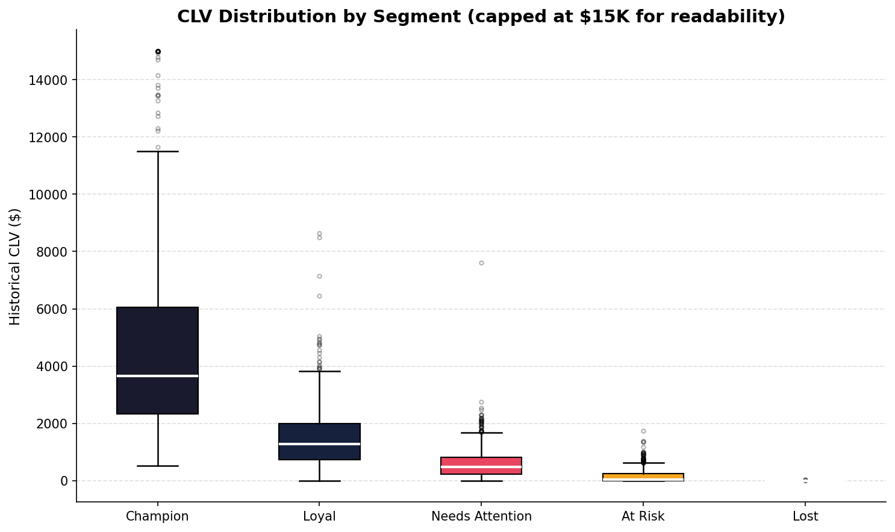
Champion CLV variance is enormous — the IQR spans roughly $2,400 to $6,000, with outliers exceeding $15K. This means there are Champions worth 20–30× the median customer. Loyal customers show a tighter distribution centered around $1,200–$1,500, suggesting a more predictable, mid-tier booking pattern. Needs Attention, At Risk, and Lost customers cluster near zero, confirming these segments represent lapsed or single-visit relationships.
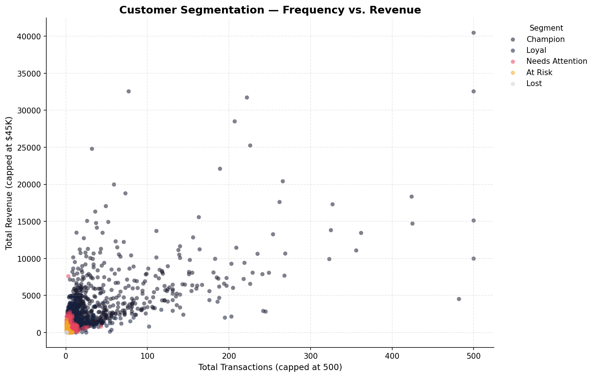
Champions cluster in the upper-right quadrant — high frequency (many transactions) and high total revenue — with the most extreme outliers reaching $40K+ in lifetime revenue. The Needs Attention (pink) and At Risk (orange) clusters concentrate in the bottom-left, with low transaction counts and low revenue. The visual separation of segments confirms that the RFM scoring is meaningfully discriminating customer behavior.
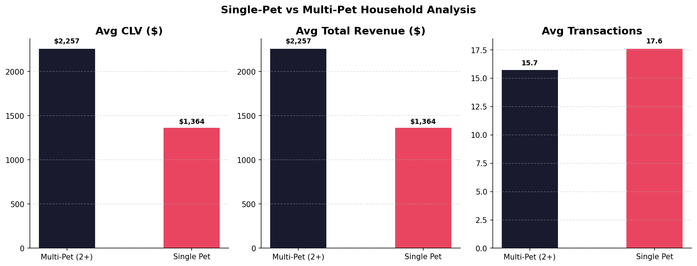
Multi-pet households (2+ animals) generate 65% more CLV ($2,257 vs. $1,364) and equivalent total revenue advantage. Interestingly, average transaction count is slightly higher for single-pet households (17.6 vs. 15.7), suggesting multi-pet households may book longer stays rather than more frequent visits — a meaningful distinction for package design. Targeting multi-pet households in acquisition and retention campaigns is a clear lever.
I built a monthly cohort table tracking what percentage of customers acquired in each month were still active 1–12 months later. The heatmap covers acquisition cohorts from June 2023 through March 2025, and the retention curve averages across all cohorts to surface the structural churn pattern.
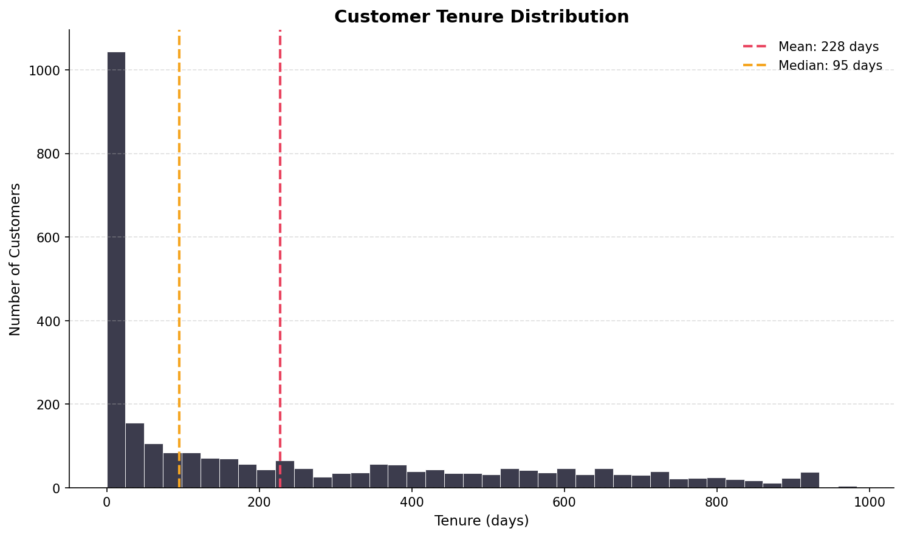
Tenure is dramatically right-skewed. The modal customer has tenure under 50 days — meaning the single most common customer profile is someone who visited once or twice and never returned. The mean (228 days) is pulled far above the median (95 days) by a long-tenured tail of loyal repeat customers. This is a churn problem, not a revenue problem. The revenue is there — it's concentrated in a small cohort of long-tenure customers who stayed.
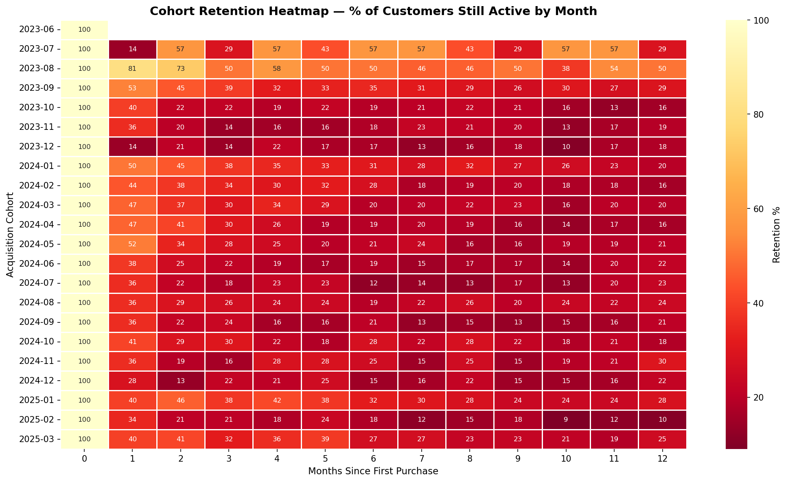
The heatmap reveals two structural retention patterns. Early cohorts (Jun–Aug 2023) show unusually high month-1 retention (81% for Aug 2023 cohort) — these were founding-era customers with novelty-driven repeat visits. Later cohorts stabilize at 30–50% month-1 retention, which is closer to the structural baseline. The dark-red (low retention) dominance across all cohorts after month 3 confirms the churn cliff happens early — within the first quarter of the customer relationship.
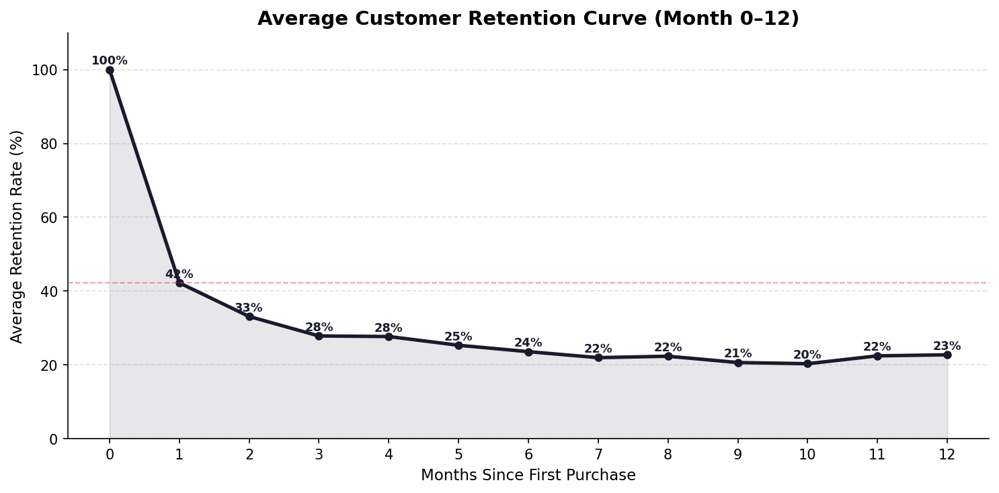
The average retention curve shows a steep initial drop: 100% at acquisition, 42% at month 1, 33% at month 2, and plateauing around 20–23% from months 6–12. This is a classic "fast churn / stable core" pattern — the majority of customers churn within the first two visits, but those who reach month 6 tend to stay. The implication is clear: the highest-ROI retention intervention is in months 1–3, before the plateau sets in.
If the business could shift average month-1 retention from 42% to 52% — a 10-point improvement — and the retention curve held its shape thereafter, the projected impact on 12-month cumulative retention would be meaningful. A post-first-visit follow-up sequence (SMS + email at day 14, day 30, day 60) targeting the drop-off window directly addresses the observed churn cliff.
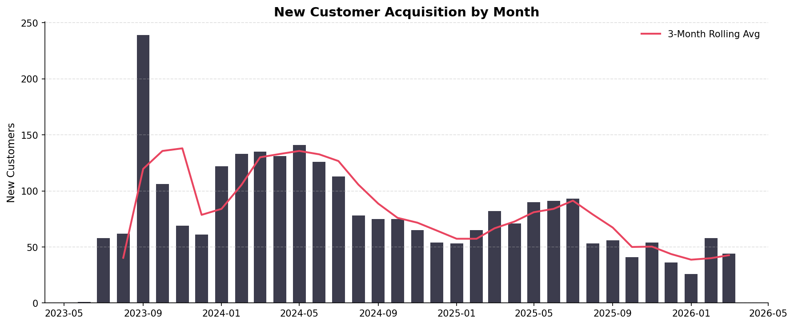
Acquisition peaked during the facility's growth phase in late 2023 (August 2023 saw 239 new customers — the single highest month). Since then, monthly acquisition has trended down toward a 50–90 customer baseline, consistent with a maturing local market. The seasonal pattern shows summer months driving acquisition spikes, likely from owners needing boarding for vacation travel. The Feb 2026 acquisition level of ~45/month suggests the business has largely captured its immediate catchment area and growth will require either expanded marketing reach or geographic expansion.
K9 Resorts offers three primary service lines: boarding (overnight stays priced by room tier), daycare (flat daily rate), and grooming (add-on service). I segmented each customer's primary service category by their highest-revenue service line and compared CLV, total revenue, and tenure across categories.
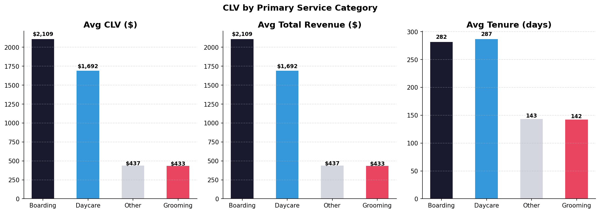
Boarding customers generate the highest average CLV ($2,109) and comparable tenure to daycare customers (282 vs. 287 days). Daycare customers are close behind at $1,692 CLV — and their tenure is effectively identical to boarding, suggesting daycare builds just as durable a relationship. Grooming and Other categories generate a fraction of the CLV ($433–$437) with roughly half the tenure, consistent with their role as single-service or occasional-use customers rather than relationship anchors.
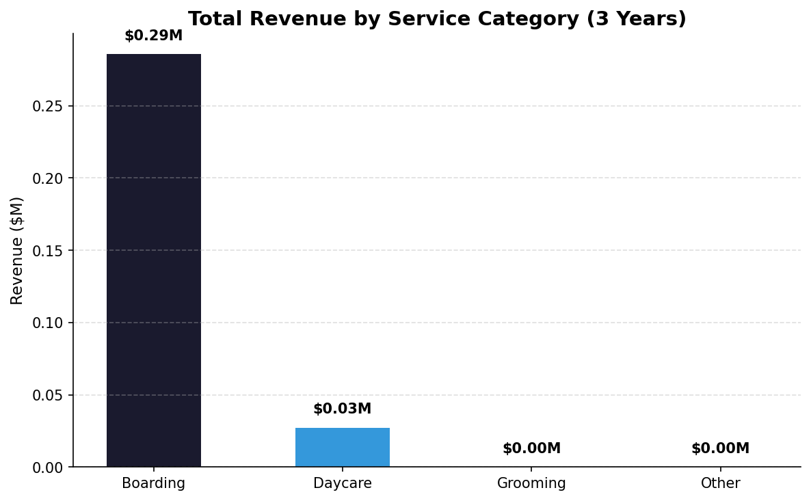
Boarding dominates total revenue at $0.29M in the analysis window, with daycare contributing $0.03M. Grooming and Other categories are negligible at this scale. This confirms that boarding is the core business — the product with the highest price point, highest CLV, and highest total revenue contribution. Daycare is a meaningful relationship-builder but represents a secondary revenue stream. Any pricing, retention, or capacity strategy should be anchored in the boarding segment.
K9 Resorts implemented two rate increases: February 2025 and February 2026. I analyzed whether these increases caused volume loss (price-elastic demand) or were absorbed without behavioral change (price-inelastic). The data covers all four boarding room tiers: Executive Room, Luxury Suite, Double Compartment, and Single Compartment.
| Room Type | Pre Rate | Post Rate | Rate Change | Pre Volume | Post Volume | Vol Change |
|---|---|---|---|---|---|---|
| Executive Room | $76 | $85 | +11.5% | 183/mo | 213/mo | +16.0% |
| Luxury Suite | $85 | $95 | +12.1% | 40/mo | 45/mo | +10.7% |
| Double Compartment | $64 | $70 | +10.2% | 28/mo | 41/mo | +43.5% |
| Single Compartment | $61 | $65 | +6.9% | 24/mo | 25/mo | +5.6% |
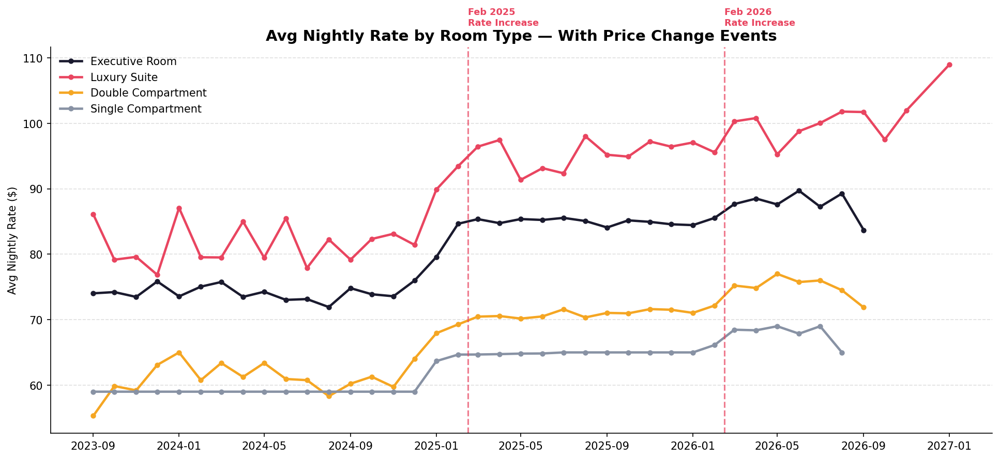
The Feb 2025 rate increase is clearly visible as a step-change across all four room types. The Luxury Suite shows the largest absolute rate increase (~$10/night) and has maintained its new pricing level consistently through the post-increase period. The Feb 2026 increase is also visible, pushing the Luxury Suite above $100/night for the first time.
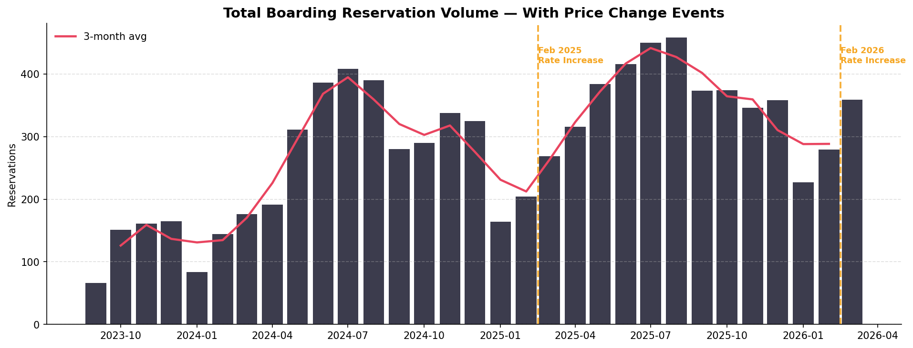
This is the critical chart for pricing strategy: volume did not decline after the Feb 2025 rate increase. In fact, monthly reservations grew in the post-increase period, reaching a new peak of ~450 by mid-2025. This is strong evidence of price-inelastic demand — K9 Resorts' customers are not price-sensitive at these rate levels, likely because premium pet boarding is perceived as a necessity rather than a luxury for this customer base.
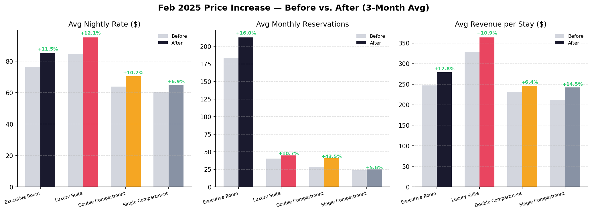
The before/after comparison across all three metrics — nightly rate, reservation volume, and revenue per stay — is uniformly positive. Every room type shows rate increases of 7–12%, volume increases of 6–44%, and stay revenue increases of 6–13%. The combination of higher prices and higher volume means revenue per stay grew on every tier. The Double Compartment's 43.5% volume increase is likely capacity-driven rather than purely price-driven, but the absence of any volume decline across any tier is the key takeaway.
Demand for K9 Resorts boarding is price-inelastic at current rate levels. Both the Feb 2025 and Feb 2026 increases were absorbed without volume loss. This validates a continued premium pricing strategy and suggests room for further rate increases — particularly in the Luxury Suite tier, which has the most price-sensitive customer profile but maintained volume through both increases.
I joined 31 months of ADP payroll data to monthly revenue to build a labor efficiency model. The key metrics are labor cost as a percentage of revenue, revenue generated per labor dollar spent, and revenue per labor hour — all of which proxy for operational leverage.
Labor as % of revenue varies dramatically month to month — from a best-case 23.8% to a worst-case 96.7%. This volatility is driven by seasonality: low-revenue winter months maintain fixed staffing, compressing margins. High-revenue summer months with peak boarding demand spread the same labor base across more revenue, improving efficiency. The goal is to minimize labor% in low-season months through scheduling optimization and shift toward more variable labor structures (part-time, on-call) during trough periods.
The worst-case month (96.7% labor-to-revenue) is essentially a break-even month after accounting only for labor. With fixed overhead (rent, utilities, franchise fees, debt service) on top, months below ~40% revenue capacity are likely operating at a loss. Building a labor scheduling model that flags when projected revenue drops below the break-even threshold — and triggers proactive hour-reduction — is the highest-impact operational improvement available.
The BG/NBD (Beta Geometric / Negative Binomial Distribution) model estimates the probability that each customer is still "alive" (has not permanently churned) and predicts their expected purchases over the next 12 months. Unlike the historical CLV model, BG/NBD is forward-looking — it tells us who to focus retention resources on today.
The model scores each customer on probability of still being active, expected purchase frequency over the next year, and expected revenue. The 168 customers with probability-alive above 50% represent the core active base — the group most likely to generate near-term revenue and most worth protecting with proactive outreach.
| Customer | Prob Alive | Predicted Purchases / Yr | Predicted CLV / Yr | Historical Revenue |
|---|---|---|---|---|
| Courtney | 85.6% | 19.0 | $5,821 | $1,548 |
| Jenene | 78.9% | 3.1 | $4,961 | $2,960 |
| Rae | 85.8% | 19.5 | $3,968 | $374 |
| Morgan | 88.1% | 4.3 | $3,604 | $2,537 |
| Pat | 83.3% | 6.4 | $3,462 | $2,269 |
| Marilyn | 90.0% | 36.3 | $3,308 | $670 |
| Jane | 56.6% | 4.2 | $3,278 | $4,907 |
| Jim | 90.5% | 11.9 | $2,817 | $989 |
| Denise | 93.8% | 9.5 | $2,728 | $3,364 |
| Jeffrey | 76.6% | 11.8 | $2,618 | $612 |
Several customers (Courtney, Rae, Marilyn) have high predicted future CLV despite relatively low historical revenue — the model detects high-frequency, recent visit patterns that signal strong forward purchase intent. Jane has the opposite profile: high historical revenue but only 56.6% probability alive, suggesting a customer who may be drifting. These asymmetries between historical and predicted CLV are exactly what makes forward-looking modeling valuable for prioritizing retention outreach.
Across all analyses — RFM segmentation, cohort retention, service mix, pricing, labor efficiency, and BG/NBD modeling — four high-priority recommendations emerge for the business.